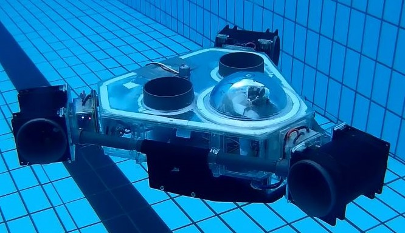
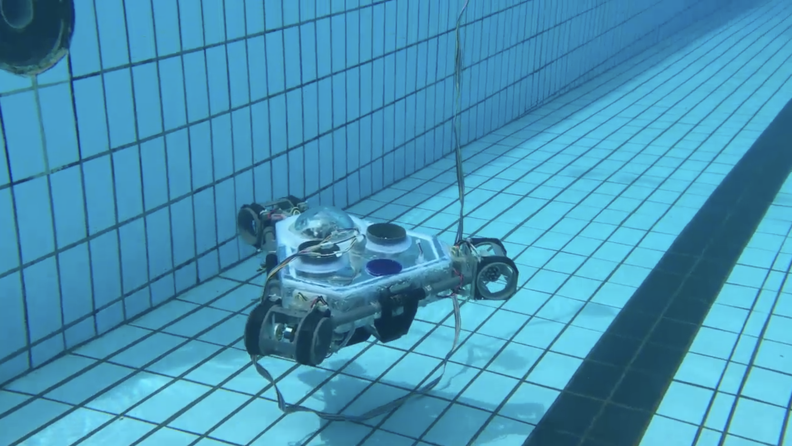

Robotics
Sliding Mode Control of An Underwater Robotic Vehicle (URV)
|

The Designed URV
|
Underwater robots capable of maneuvering in multiple directions are highly sought after for inspection and surveillance tasks in complex underwater environments. In my undergraduate research project, together with two colleagues, T. Ranasinghe and M. Ilangakoon, we designed a novel underwater robotic vehicle (URV) with multidirectional mobility in the horizontal plane. Additionally, we developed a robust nonlinear controller to address the URV's trajectory tracking problem in the horizontal plane. Utilizing multi-input-multi-output sliding mode control (MIMO SMC), we proposed a trajectory tracking controller capable of mitigating the effects of hydrodynamic parameter uncertainties and handling coupled dynamics.
The unpeer-reviewed project report can be viewed here! |

A Video of the URV in Action

A Video of the V-REP Simulation